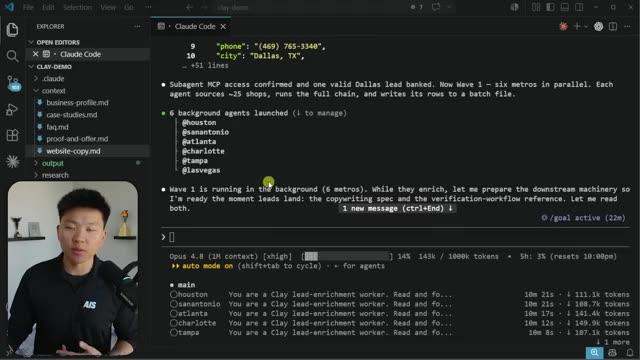
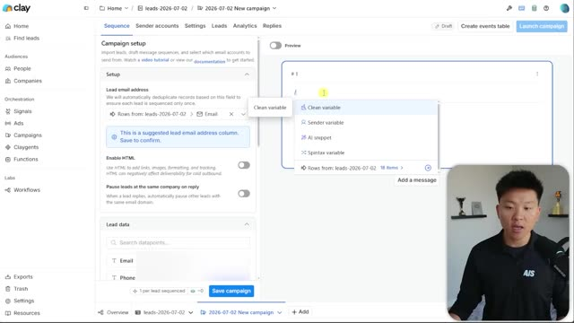

Конспект видео · Nate Herk | AI Automation · 2026-07-12 · 18 мин Video digest · Nate Herk | AI Automation · 2026-07-12 · 18 min
Claude Code + Clay: лидогенерация одним промптом Claude Code + Clay: lead generation from a single prompt
Смотреть видео ↗Watch the video ↗
Нейт Херк показывает связку, в которой холодный аутрич собирается одним промптом: Claude Code — оркестратор, Clay — источник B2B-данных. Идея разделения проста: у аутрича две проблемы — данные (найти бизнесы и настоящие контакты) и инструменты (десяток сервисов с разными UI). Clay закрывает первую своим «водопадом» провайдеров (если первый поставщик не нашёл email, запрос спускается по цепочке — доля найденных контактов растёт с ~30% до 80–90%), а Claude Code закрывает вторую: «не хочу учить новый интерфейс — пусть агент сам разбирается с эндпоинтами» [00:47] [03:33]. Nate Herk demonstrates a stack where cold outreach is assembled from one prompt: Claude Code as the orchestrator, Clay as the B2B data source. The split is simple: outreach has two problems — data (finding businesses and real contacts) and tooling (a dozen services with different UIs). Clay solves the first with its provider "waterfall" (if the top vendor misses an email, the request cascades down the chain — hit rate climbs from ~30% to 80–90%), and Claude Code solves the second: "I don't want to learn another UI — let the agent figure out the endpoints" [00:47] [03:33].
Метод: контекст → goal-промпт → фан-аут → верификацияThe method: context → goal prompt → fan-out → verification
Установка — через plugin marketplace в терминале Claude Code, авторизация Clay — по ссылке из их собственного скилла [05:31]. Обязательное условие качества — заранее собранный контекст о своём бизнесе: профиль, кейсы, оффер, копирайт сайта; без этого агент не напишет персональные письма [02:20]. Дальше один /goal-промпт: «50 обогащённых лидов HVAC-компаний с email, болями бизнеса, свежими сигналами; каждому — персональные тема и тело письма; CTA — согласие на 90-секундный Loom; не останавливайся, пока не будет всех 50, и проверь себя динамическим workflow» [08:17]. Агент сам выбрал стратегию: шесть параллельных субагентов по городам, каждый ищет и обогащает ~25 компаний, затем агрегация, дедуп и проверки — включая «дебаты» агентов о качестве темы и тела письма [09:50]. Стиль копирайта агент взял из транскрипта подкаста с практиком холодных писем, который автор скормил системе как образец [13:21]. Setup goes through the plugin marketplace in the Claude Code terminal, with Clay auth via a link from Clay's own skill [05:31]. The quality prerequisite is pre-built business context: profile, case studies, offer, website copy; without it the agent can't write personal emails [02:20]. Then one /goal prompt: "50 enriched HVAC leads with emails, business pain points, fresh signals; personalized subject and body for each; CTA — a yes to a 90-second Loom; don't stop until all 50, and verify yourself with a dynamic workflow" [08:17]. The agent picked its own strategy: six parallel subagents by city, each sourcing and enriching ~25 companies, then aggregation, dedup and checks — including agent "debates" over subject/body quality [09:50]. The copy style came from a cold-email practitioner's podcast transcript the author fed in as a style guide [13:21].

Результат и экономикаResults and economics
Через час — CSV с 50 лидами: верифицированные email, телефоны, рейтинг и отзывы Google, боли бизнеса, свежий сигнал, персональный крючок и готовые тема+тело письма (пример: тема «Ваш единственный плохой отзыв — про необработанные звонки», в теле — конкретный кейс из отзывов клиента) [11:44]. Цена — 172 кредита Clay ≈ $12 за 50 полностью обогащённых лидов; быстрый прогон без обогащения занимает ~5 минут [11:17]. Финал — CSV импортируется обратно в Clay: кампания собирается подстановкой переменных из колонок, там же покупаются прогретые домены для отправки [14:50]. An hour later — a CSV of 50 leads: verified emails, phones, Google rating and reviews, business pain points, a fresh signal, a personalization hook and ready-made subject+body (example subject: "your one bad review is about call backs," with a concrete case from the customer's reviews in the body) [11:44]. The price — 172 Clay credits ≈ $12 for 50 fully enriched leads; a quick run without enrichment takes ~5 minutes [11:17]. The finale: the CSV goes back into Clay — the campaign is assembled by mapping column variables, and pre-warmed sending domains are bought right there [14:50].

Почему это важно: шаблон «агент-оркестратор + специализированный источник данных через плагин» переносится далеко за пределы лидогенерации — тот же рисунок работает для любых пайплайнов «найди → обогати → сгенерируй персональный контент». И характерно, что автор строит его без единого нового UI: интерфейсом становится сам агент. **Why it matters:** the "agent orchestrator + specialized data source via plugin" template travels far beyond lead gen — the same shape fits any find → enrich → generate-personalized-content pipeline. Tellingly, the author builds it without learning a single new UI: the agent itself becomes the interface.
Конспект построен по субтитрам; кадры извлечены по таймкодам, отобранным из транскрипта. Digest built from subtitles; frames extracted at timestamps picked from the transcript.